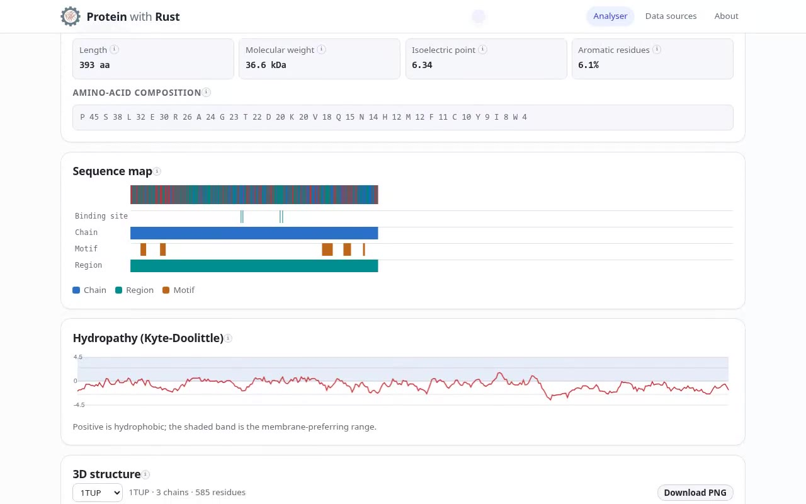
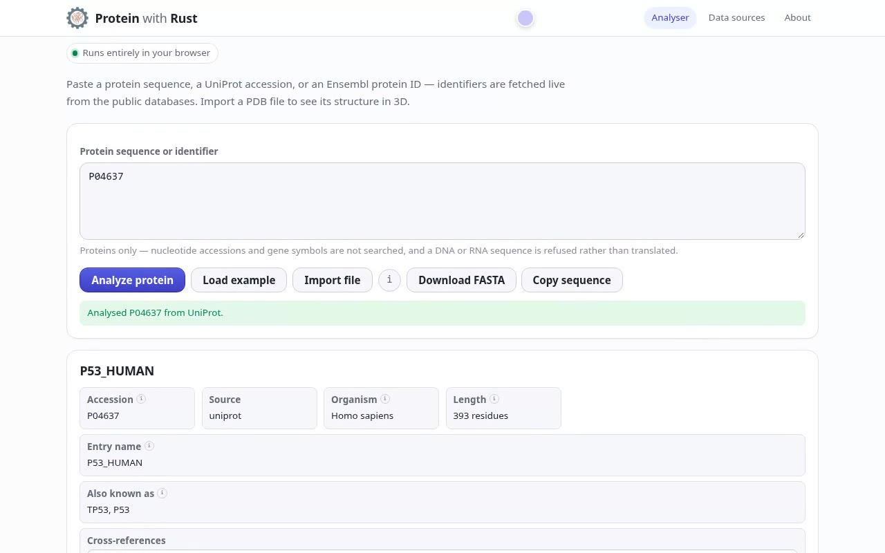
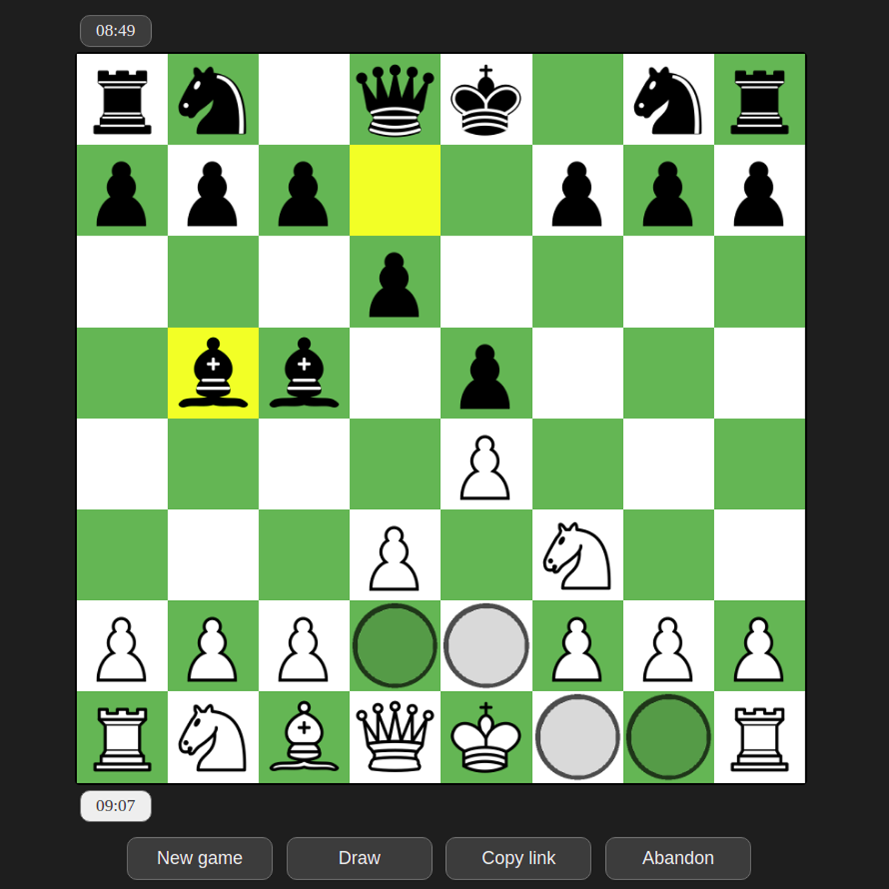
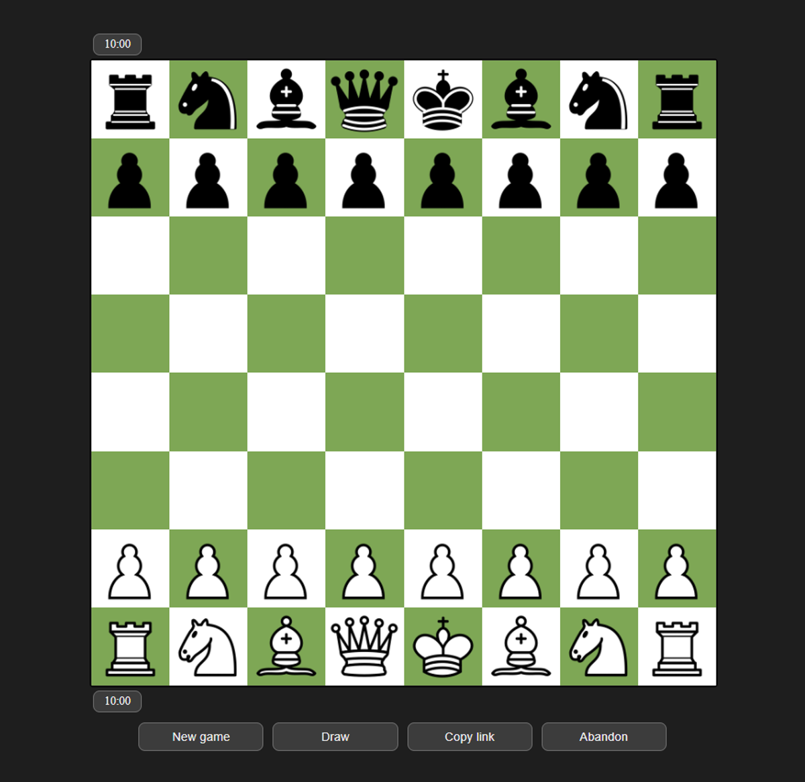
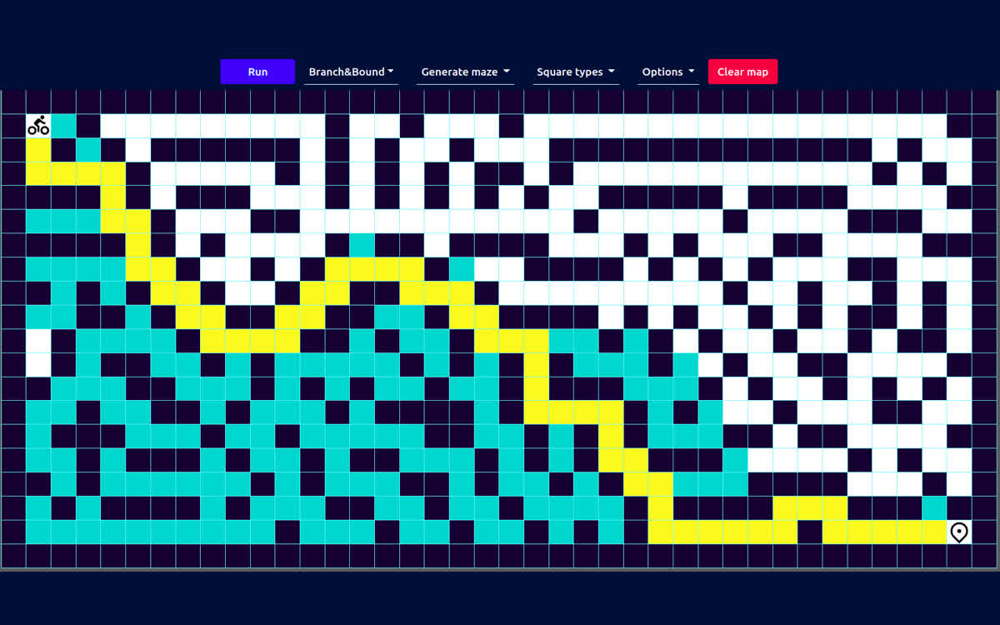
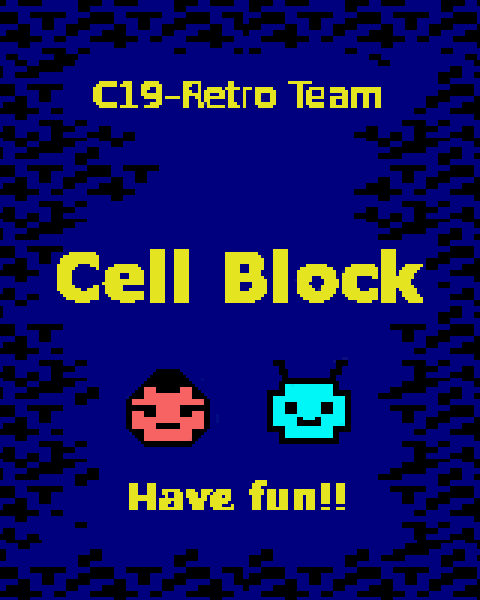

One entry per public repository, written from the code rather than from memory, with the date of
the last commit attached. The first one is a private repository — the recording and the write-up
are here, and I am happy to walk through the source in an interview. The other six are open, and one of them — the chess game — is a joint project with Carlos Arismendi Sánchez rather than a repository of mine.
A protein explorer that runs entirely in the browser. Paste a sequence, a UniProt accession or an Ensembl protein ID, or import a FASTA, GenBank, GFF3 or PDB file — you get composition, molecular weight, isoelectric point, aromaticity, a feature map, a hydropathy profile and, for anything with a known structure, an interactive 3D cartoon. Every record is fetched live from a public database and all the analysis runs on your own CPU, compiled from Rust to WebAssembly. There is no backend on the critical path: open it and it works.
The recorded walkthrough: one lookup, from the query box to the 3D cartoon.


RustWebAssemblyTypeScriptVitePlaywright
One action, three inputs: the app infers whether you gave it a document, an identifier or a sequence, and refuses a nucleotide sequence with an explanation rather than quietly translating it.
Network in TypeScript, compute in Rust. Browser WebAssembly cannot issue HTTP requests cleanly, so the fetch calls live in TypeScript and the Rust core stays a pure function library — including the part that decides which URLs to request and how to read the answers, so the interesting logic stays testable Rust.
The 3D view is a smoothed backbone extruded as a tube — round and thick for helices, wide and flat for strands — coloured by secondary structure. WebGL when the browser offers it; the same mesh, lighting and depth cueing rasterised on the CPU when it does not.
Every label comes from the coordinate file itself — declared sites, named mutations, bound molecules, modified residues, chain ends, disulfides — and a label whose residue sits behind the protein is hidden rather than drawn through it.
Honest failures: an unreachable API, an unparseable file or an identifier from outside the protein namespaces each produce a card that names the problem.
Last commit 20 Sep 2026 · Private repository — walkthrough on request
Chess
A two-player chess game built with Carlos Arismendi Sánchez in the summer of 2021: a vanilla-JavaScript board talking to a Go backend over WebSockets. The repository has 128 commits and 25 of them are mine — my part was the rules, and the screenshots below are the feature I spent that fortnight on.


JavaScriptGoEchoWebSocketsHTML / CSS
The move-legality engine. Detecting check and which piece gives it, computing the squares that have to be defended, and restricting every piece — king included — to moves that answer the check. Two pieces checking at once, and a king whose escape square is blocked by its own piece, were the cases that took the longest.
Castling, properly. Both sides, the rook move, and the rule people forget: castling is cancelled when the king's path is attacked. A piece that would expose your own king simply does not move.
The small rules too: promotion (there was a bug where the piece changed type but the board index did not) and en passant — a pawn may take a pawn that has just jumped past it.
How it is split: front end in vanilla JavaScript and object-oriented style, no framework; backend in Go on Echo, WebSockets for the moves; the UI highlights the last move, the legal destinations of the selected piece, move sounds and draw offers.
What I would change now: the rules lived in the game object until we moved them into the board halfway through. That refactor is why the last week of fixes was quick instead of frightening.
Last commit 3 Sep 2021 · Repository → · with Carlos Arismendi Sánchez
Path Finding Visualizer
A visualiser for maze generation and path finding: draw walls or generate a maze, choose an algorithm, and watch it explore the grid cell by cell.

TypeScriptA*BFS / DFSCanvasParcel
Five solvers written from scratch: A*, backtracking, branch and bound, randomised BFS and randomised DFS, behind one IAlgorithm interface and a factory.
Two generators — a random maze and a randomised star-shaped one — so the same solver can be compared on different topologies.
Parcel bundles it; the animation is driven by CSS classes per cell rather than a drawing loop, which keeps the search itself readable.
A small Go client for exchange WebSocket streams, written while learning the language and testing whether triangular arbitrage across live order books is worth chasing. It is a learning repository, not a trading system.
GoWebSocketsgoroutinesmarket data
Subscribes to kline and book-ticker topics over a single socket, with a message abstraction that maps subscription requests and stream events onto Go structs.
Two runnable examples: one that streams quotes for a symbol pair, one that walks a triangular path across three markets.
What it taught me was the shape of the problem rather than the profit: the spread that looks large in the stream is gone by the time three legs settle.
The notebook that went in for the Cajamar UniversityHack 2021 datathon, hosted by PcComponentes: predict product sales per product and per day, scored on a metric that punishes stock-outs more than plain error.
Metric to minimise: 0.7 · rRMSE + 0.3 · (1 − CF), where CF is the share of cases where forecast demand stayed under real demand — so under-forecasting a popular item costs more than being slightly high.
Feature work on product, price, campaign, tenure and calendar data, including cyclic encodings of the year and week, then a regression model over the engineered features.
Kept as the final notebook rather than a tidy package: it is the work as it was submitted, plots included.
A maze-and-enemies game for the Amstrad CPC, written in Z80 assembly on top of CPCtelera and released as a bootable tape image. A four-person team project for the Automated Reasoning course: the code and the graphics were mine, the loading screen and music were not.

Z80 assemblyCPCteleraAmstrad CPCpixel art
Hand-written Z80 assembly for a 4 MHz machine with 64 KB of memory: sprites, tile maps, movement, collision and a fixed-timestep game loop.
Built against a pinned CPCtelera commit; make cleanall && make produces CellBlock.cdt, which boots in an emulator or on real hardware.
Twenty-one assembly sources and seventeen hand-drawn sprites — the discipline of counting bytes is the part that carried over into my day job.
A neural network with no framework behind it — layers, forward pass, backpropagation — plus an agent that learns to play Atari through the Arcade Learning Environment bundled in the repository.